일반기계기사 (2007-03-04 기출문제)
1과목: 재료역학
1. 2축 응력상태에서 σx=-σy=140MPa 이고 재료의 전단탄성계수 G=84GPa이면 전단 변형률 γ 는?
- 0.87×10-3
- 1.27×10-3
- 1.67×10-3
- 1.89×10-3
(정답률: 50%)

2. 그림과 같은 형태로 분포하중을 받고 있는 단순지지보가 있다. 지지점 A에서의 반력 RA는 얼마인가? (단 , 분포하중
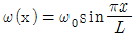
)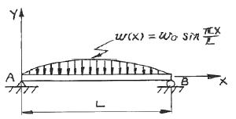
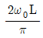
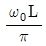
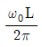
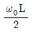
(정답률: 32%)
3. 높이 h, 폭 b인 직사각형 단면을 가진 보와 높이 b, 폭 h인 단면을 가진 보의 단면 2차 모멘트의 비는? (단, h = 1.5 b)
- 1.5 : 1
- 2.25 : 1
- 3.375 : 1
- 5.06 : 1
(정답률: 52%)
4. 재료가 동일한 길이 L, 지름 d인 축과 길이 2L, 지름 2d인 축을 동일각도 만큼 변위시키는데 필요한 비틀림 모멘트의 비 T1/T2 의 값은 얼마인가?
- 1/4
- /18
- 1/16
- 1/32
(정답률: 32%)
5. 단면 [폭×높이]이 4 ㎝ × 6 ㎝이고 길이가 2 m인 단순보의 중앙에 집중하중이 작용할 때 최대처짐이 0.5 ㎝라면 집중하중은 몇 N 인가? (단, 탄성계수 E = 200 GPa 이다.)
- 5520
- 3300
- 2530
- 4320
(정답률: 40%)
6. 평면 응력상태에서 σx=100MPa, σy=50MPa일 때 x방향과 y방향의 변형률 Єx, Єy는 얼마인가? (단, 이 재료의 탄성계수 E = 210 GPa, 포와송의 비 μ= 0.3이다.)
- Єx=202×10-6, Єy=46×10-6
- Єx=404×10-6, Єy=95×10-6
- Єx=404×10-6, Єy=404×10-6
- Єx=808×10-6, Єy=190×10-6
(정답률: 41%)
7. 축 방향의 단면에 균일한 인장응력 10 MPa이 작용하고 있다면 이 때 체적 변형률 Єv는? (단, 포와송의 비 μ=0.3, 탄성계수 E = 210 GPa이다.)
- 1.6×10-5
- 1.7×10-5
- 1.8×10-5
- 1.9×10-5
(정답률: 41%)
8. 부재의 양단이 자유롭게 회전할 수 있도록 부하되고, 길이가 4 m이고 단면이 직사각형(100 ㎜ × 50 ㎜)인 압축 부재의 좌굴 하중을 오일러 공식으로 구하면 몇 kN 인가? (단, 탄성계수 E = 100 GPa 이다.)
- 52.4 kN
- 64.4 kN
- 72.4 kN
- 84.4 kN
(정답률: 48%)
9. 다음 그림에서 임의의 θ 단면에서 굽힘모멘트의 크기는?
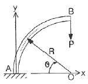
- PR(1-cosθ)
- PRcosθ
- PR(1-sinθ)
- PRsinθ
(정답률: 20%)
10. 직경이 1.5 m, 두께가 3 mm인 원통형 강재 용기의 최대사용강도가 240 MPa 일 때 지탱할 수 있는 한계압력은 몇 kPa 인가? (단, 안전계수는 2 이다.)
- 240
- 480
- 720
- 960
(정답률: 32%)
11. 안지름이 25 ㎜, 바깥 지름이 30 ㎜ 인 중공 강철관에 10 kN의 축인장 하중을 가할 때 인장응력은 몇 MPa인가?
- 14.2
- 20.3
- 46.3
- 145.5
(정답률: 52%)
12. 그림과 같은 직사각형 단면을 갖는 단순지지보에 3 kN/m의 균일 분포하중과 축방향으로 50 kN의 인장력이 작용할 때 최대 및 최소 응력은?
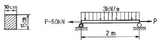
- 4 MPa 인장, 3.33 MPa 압축
- 4 MPa 압축, 3.33 MPa 인장
- 7.33 MPa 인장, 0.67 MPa 압축
- 7.33 MPa 압축, 0.67 MPa 인장
(정답률: 32%)
13. 알루미늄의 탄성계수는 약 7 GPa이다. 길이 20 ㎝, 단면적 10 cm2인 봉을 축력을 받는 스프링으로 사용하려 할 때, 스프링 상수는 몇 MN/m 인가?
- 3.5
- 35
- 7
- 70
(정답률: 26%)
14. 탄성계수가 E1, E2인 두 부재 ①, ②가 그림과 같이 합성된 구조물로 압축하중 P를 받고 있다. ①, ②에 발생되는 응력의 비는?
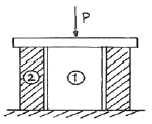
- σ1/σ2=E2/E1
- σ1/σ2=E1/E2
- σ1/σ2=E2/(E1+E2)
- σ1/σ2=E1/(E1+E2)
(정답률: 32%)
15. 평면응력 상태에서 σx=300MPa, σy=-900MPa , τxy=450MPa일 때 최대 주응력 σ1은 몇 MPa 인가?
- 1150
- 300
- 450
- 750
(정답률: 20%)
16. 그림과 같은 균일분포하중 ω kN/m를 받는 단순보에서 중앙점의 처짐을 0으로 하고자 할 때, 아래에서 위로 받쳐 주어야 하는 힘 P 는?
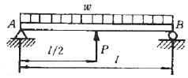
- P = ωℓ
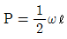
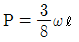
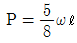
(정답률: 40%)
17. 다음 그림과 같이 반지름이 a인 원형단면의 원주에 접하는 축(x')에 대한 단면 2차 모멘트는?
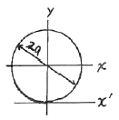
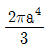
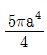
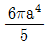
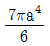
(정답률: 28%)
18. 그림과 같이 정삼각형 형태의 트러스가 길이 150 ㎝인 2개의 봉으로 조립되어 절점 B에서 수직하중 P = 15000 N을 받고 있다. 이 두 봉은 같은 단면적과 같은 재료를 사용하였다면 B점의 수직변위 δv는? (단, 탄성계수 E = 210 GPa, 단면적 A = 1.56cm2이다.)
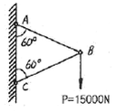
- 0.00137 ㎜
- 0.137 ㎜
- 0.0137 ㎜
- 1.37 ㎜
(정답률: 19%)
19. 그림에 표시된 사각형 단면의 짧은 기둥에서 e= 2 ㎜ 되는 곳에 100 kN의 압축 하중이 작용할 때 발생되는 최대응력은?
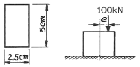
- 39.6 MPa
- 56.2 MPa
- 83.7 MPa
- 118.4 MPa
(정답률: 21%)
20. 중공 축의 내부 직경이 40 ㎜, 외부 직경이 60 ㎜ 일 때, 최대 전단응력이 120 MPa를 초과하지 않도록 적용할 수 있는 최대 비틀림 모멘트는 몇 kN·m 인가?
- 1.02
- 2.04
- 3.06
- 4.08
(정답률: 41%)
2과목: 기계열역학
21. 물질의 양에 따라 변화하는 종량적 상태량은?
- 밀도
- 체적
- 온도
- 압력
(정답률: 45%)
22. 작동 유체가 상태 1부터 상태 2까지 가역 변화할 때의 엔트로피 변화로 가장 옳은 것은?
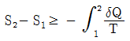
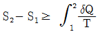
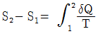
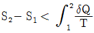
(정답률: 28%)
23. 다음 중 1 kg의 질량이 있는 어떤 계가 가역적으로 상태 1에서 2로 바뀔 때 열을 나타내는 것은?
- T-s 선도에서의 아래 면적
- h-s 선도에서의 아래 면적
- p-v 선도에서의 아래 면적
- p-h 선도에서의 아래 면적
(정답률: 46%)
24. 압력 101 kPa이고, 온도 27℃일 때, 크기가 5m×5m×5m인 방에 있는 공기가 질량을 계산하면? (단, 공기의 기체상수는 287 J/kgK이다.)
- 약 117㎏
- 약 137㎏
- 약 127㎏
- 약 147㎏
(정답률: 38%)
25. 산소 2몰과 질소 3몰을 100 ㎪, 25℃에서 단열정적 과정으로 혼합한다. 이 때 엔트로피 증가량은 약 얼마인가? (단, 일반기체상수 R = 8.31434 kJ/k㏖·K 이다.)
- 25 J/K
- 2⑤ J/K
- 28 J/K
- 3⑤ J/K
(정답률: 20%)
26. 해수면 아래 20m 에 있는 수중다이버에게 작용하는 절대압력은? (단, 대기압은 101 ㎪ 이고, 해수의 비중은 1.03 이다.)
- 202.9 ㎪
- 302.9 ㎪
- 101.3 ㎪
- 503.4 ㎪
(정답률: 44%)
27. 대기압 하에서 물질의 질량이 같을 때 엔탈피의 변화가 가장 큰 경우는?
- 100℃ 물이 100℃ 수증기로 변화
- 100℃ 공기가 200℃ 공기로 변화
- 90℃의 물이 91℃ 물로 변화
- 100℃의 구리가 115℃ 구리로 변화
(정답률: 40%)
28. Joule의 실험에 의하면 이상기체의 내부에너지는 온도만의 함수이다. 이의 결과에 합당하지 않은 것은?
- 이상기체 정압비열은 온도만의 함수이다.
- 이상기체 정적비열은 온도와 관계없이 일정하다.
- 이상기체 정압비열과 이상기체 정적비열의 차이는 온도와 관계없이 일정하다.
- 이상기체 엔탈피는 온도만의 함수이다.
(정답률: 14%)
29. 열효율이 25%이고 수증기 1㎏당 출력이 800 kJ/㎏인 증기기관의 증기소비율은 몇 ㎏/㎾h인가?
- 1.125
- 4.5
- 800
- 18
(정답률: 10%)
30. 10냉동 톤의 능력을 갖는 카르노 냉동기의 응축 온도가 25℃, 증발 온도가 –20℃이다. 이 냉동기를 운전하기 위하여 필요한 이론 동력은 몇 ㎾인가? (단, 1냉통 톤은 3.85㎾이다.)
- 6.85
- 4.65
- 2.63
- 1.37
(정답률: 42%)
31. 실린더 내의 이상기체 1㎏ 이 27℃를 일정하게 유지하면서 200 ㎪에서 100㎪까지 팽창하였다. 기체가 수행한 일은? (단, 이 기체의 기체상수는 1 kJ/㎏·K이다.)
- 27 kJ
- 208 kJ
- 300 kJ
- 433 kJ
(정답률: 35%)
32. 아래 그림과 같은 이상 열펌프의 각 상태에서 엔탈피는 다음과 같다. 열펌프의 성능계수는? (단, h1 = 155 kJ/㎏, h3 = 593 kJ/㎏, h4 = 827 kJ/㎏ 이다.)
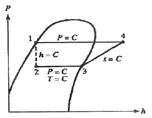
- 2.9
- 3.5
- 1.8
- 4.0
(정답률: 31%)
33. 227℃의 증기가 500 kJ/㎏의 열을 받으면서 가역등온팽창한다. 이 때의 엔트로피의 변화는 약 얼마인가?
- 1.0 kJ/㎏ K
- 1.5 kJ/㎏ K
- 2.5 kJ/㎏ K
- 2.8 kJ/㎏ K
(정답률: 35%)
34. P – V 선도에서 그림과 같은 변화를 갖는 이상기체가 행한 일은?
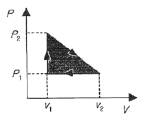
- P2(V2-V1)
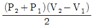
- P1(V2-V1)
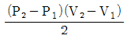
(정답률: 59%)
35. 250K에서 열을 흡수하여 320K에서 방출하는 이상적인 냉동기의 성능 계수는?
- 0.28
- 1.28
- 3.57
- 4.57
(정답률: 40%)
36. 열과 일에 대한 설명 중 맞는 것은?
- 열과 일은 경계현상이 아니다.
- 열과 일의 차이는 내부에너지만의 차이로 나타난다.
- 열과 일은 항상 양의 수로 나타낸다.
- 열과 일은 경로에 따라 변한다.
(정답률: 43%)
37. 다음 그림은 오토사이클의 P-V 선도이다. 그림에서 3-4가 나타내는 과정은?
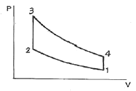
- 단열 압축과정
- 단열 팽창과정
- 정적 가열과정
- 정적 방열과정
(정답률: 32%)
38. 1㎏의 기체로 구성되는 밀폐계가 50 kJ/㎏의 열을 받아 15 kJ/㎏의 일을 했을 때 내부에너지 변화는? (단, 운동에너지의 변화는 무시한다.)
- 약 65 kJ
- 약 26 kJ
- 약 15 kJ
- 약 35 kJ
(정답률: 37%)
39. 마찰이 없는 피스톤과 실린더로 구성된 밀폐계에 분자량이 25인 이상기체가 2㎏있다. 기체의 압력이 100 ㎪로 일정할 때 체적이 1m3에서 2m3로 변화한다면 이 과정 중 열 전달량은? (단, 정압비열은 1.0 kJ/㎏K이다.)
- 약 150 kJ
- 약 202 kJ
- 약 268 kJ
- 약 300 kJ
(정답률: 24%)
40. 오토 사이클의 압축비가 6인 경우 이론 열효율은 약 몇%인가? (단, 비열비 = 1.4이다.)
- 51
- 61
- 71
- 81
(정답률: 48%)
3과목: 기계유체역학
41. 아래 그림과 같이 폭이 3m이고, 높이가 4m인 수문의 상단이 수면 아래 1m에 놓여있다. 이 수문에 작용하는 압력에 의한 외력의 작용점은 수면 아래로 몇 m 인가?
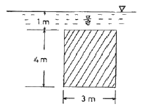
- 4.77 m
- 3.44 m
- 2.36 m
- 1.86 m
(정답률: 28%)
42. 절대압력을 정하는데 기준(영점)이 되는 것은?
- 게이지압력
- 표준대기압
- 국소대기압
- 완전진공
(정답률: 23%)
43. 유체를 정의한 것 중 가장 옳은 것은?
- 용기 안에 충만 될 때까지 항상 팽창하는 물질
- 흐르는 모든 물질
- 흐르는 물질 중 전단 응력이 생기지 않는 물질
- 극히 작은 전단응력이 물질 내부에 생기면 정지상태 있을 수 없는 물질
(정답률: 52%)
44. 다음 중에서 이상기체에 대한 음파의 속도가 아닌 것은? (단, ρ:밀도, P:압력, V:속도, k:비열비, g:중력가속도, R:기체상수, T:절대온도, s:엔트로피)
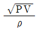
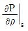
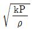
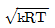
(정답률: 46%)
45. 물체 표면에 가까운 곳에서 속도 분포가 u=u0sin ky로 표시될 수 있다고 할 때 물체 표면에 작용하는 전단응력은 어느 것으로 표시되는가? (단, u0는 주류부의 유속, k는 상수, y는 물체 표면에 수직한 방향의 좌표, μ는 점성 계수이다.)
- 0
- μu0sin ky
- μu0cos k
- μku0
(정답률: 9%)
46. 고속도로 톨게이트의 폭이 도로에 비하여 넓게 만들어진 이유를 가장 적절하게 설명해 줄 수 있는 것은?
- 연속 방정식
- 에너지 방정식
- 베르누이 방정식
- 열역학 제2법칙
(정답률: 38%)
47. 지름이 1㎝인 원통 관에 0℃의 물이 흐르고 있다. 평균속도가 1.2 m/s이고, 0℃ 물의 동점성계수가 v=1.788×10-6m2/s일 때, 이 흐름의 레이놀즈 수는?
- 2356
- 4282
- 6711
- 7801
(정답률: 45%)
48. 어떤 물리적인 계(system)에서 관성력, 점성력, 중력, 표면장력이 중요하다. 이 시스템과 관련된 무차원 수가 아닌 것은?
- 웨버수
- 레이놀즈수
- 프루드수
- 오일러수
(정답률: 28%)
49. 지름 0.4 m인 관에 물이 0.5 m3/s로 흐를 때 길이 300 m에 대해서 동력손실은 60 ㎾였다. 이 때 관마찰계수 f는? (단, 물의 비중량은 9800 N/m3이다.)
- 0.015
- 0.02
- 0.025
- 0.03
(정답률: 30%)
50. 그림과 같이 U자관 액주계가 x방향으로 등가속 운동하는 경우 x방향 가속도 ax는? (단, 수은의 비중은 13.6이다.)
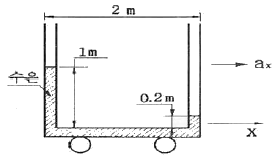
- 0.4 m/s2
- 0.98 m/s2
- 3.92 m/s2
- 4.9 m/s2
(정답률: 35%)
51. (r, θ) 극좌표계에서 속도 포텐셜
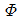
=2θ 에 대응하는 원주방향 속도(vθ)는?- 4π/r
- 2/r
- 2r
- 4πr
(정답률: 17%)
52. 수평 원관 속의 층류 유동에서 하겐-포아젤 방정식을 나타내는 것은? (단, μ는 점성계수, Q는 유량, P는 압력을 나타낸다.)
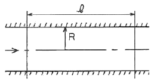
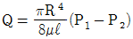
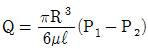
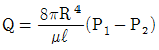
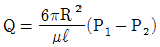
(정답률: 45%)
53. 지름이 70 ㎜인 소방노즐에서 물제트가 50 m/s의 속도로 건물 벽에 수직으로 충돌하고 있다. 벽이 받는 힘은 약 몇 kN인가?(단, 물의 밀도는 1000 ㎏/m3이다.)
- 21.2
- 5.50
- 7.42
- 9.62
(정답률: 44%)
54. 그림과 같이 직경 비가 2:1인 벤츄리 관에서 압력차 ∆P를 바르게 표현한 것은? (단, ρ는 유체의 밀도)
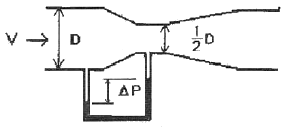
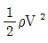
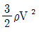
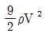
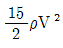
(정답률: 20%)
55. 다음 그림과 같이 축소되는 사각형 덕트에 어떤 유체가 흐르고 있다. 그림에 표시된 0지점에서 속도분포를 측정한 결과 다음 식과 같이 y만의 함수이다.
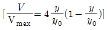
, y0=50㎜이고, Vmax=1m/s인 경우에 총 유량(m3/s)은?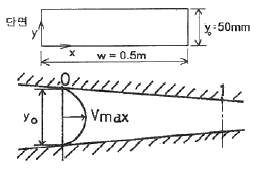
- 1/60
- 1/120
- 1/180
- 1/240
(정답률: 8%)
56. 지름이 10 ㎝인 파이프에 물(밀도=1000㎏/m3)이 평균속도 5 m/s로 흐를 때, 마찰계수가 0.02라고 한다. 이 파이프가 그림과 같이 30° 경사지게 놓여있고 물이 위로 흐르면 파이프 1 m 당 압력 변화는 얼마인가?
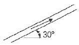
- 2.55 ㎪ 감소
- 4.95 ㎪ 증가
- 7.35 ㎪ 감소
- 12.35 ㎪ 증가
(정답률: 15%)
57. 그림과 같이 곡면판이 제트를 받고 있다. 제트속도 V m/s, 유량 Q m3/s, 밀도 ρ ㎏/m3, 유출방향을 θ라 하면 제트가 곡면판에 주는 x 방향의 힘을 나타내는 식은?
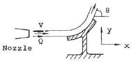
- ρQV2cosθ
- ρQVcosθ
- ρQVsinθ
- ρQv(1-cosθ)
(정답률: 35%)
58. 지름 0.015 m의 구가 공기 속을 28 m/s의 속도로 날아가는 경우 항력은 몇 N인가? (단, 공기의 밀도는 1.23 ㎏/μ, 동점성계수는 0.15 cm2/s, 항력계수는 CD= 0.5 이다.)
- 3.56×10-4
- 2.25×10-3
- 4.26×10-2
- 5.64×10-4
(정답률: 37%)
59. 어떤 오일의 동점성계수가 2×10-4m2/s이고 비중이 0.9라면 점성계수는 몇 ㎏/(m·s)인가? (단, 물의 밀도는 1000㎏/m3이다.)
- 0.2
- 2.0
- 0.18
- 1.8
(정답률: 41%)
60. 차원 해석에 있어서 반복 변수(repeating parameter)의 선정 방법으로 가장 적합한 것은?
- 별로 중요하지 않는 변수도 포함시켜야 한다.
- 기본차원을 모두 포함하여 서로 종속이 아닌 변수로 택하여야 한다.
- 가능하면 같은 차원을 갖는 2개의 변수(물리량)를 포함시켜야 한다.
- 각 변수로부터 한 개의 차원을 제거시켜야 한다.
(정답률: 29%)
4과목: 기계재료 및 유압기기
61. 탄소강의 5대 원소를 나열한 것이다. 옳은 것은?
- Fe, C, Ni, Si, Au
- Ag, C ,Si, Mn, P
- C, Si, Mn, P, S
- Ni, C, Si, Mn, S
(정답률: 70%)
62. 다음 중 공구재료의 구비조건이 아닌 것은?
- 고온 경도 높을 것
- 내마모성 클 것
- 마찰계수 클 것
- 열처리가 쉬울 것
(정답률: 71%)
63. 순철(pure iron)에 없는 변태는 어느 것인가?
- A1
- A2
- A3
- A4
(정답률: 67%)
64. 알루미늄의 전기 전도도는 구리의 약 65%이다. 다음 불순물 중 전기 전도도에 가장 유해한 원소는?
- Si
- Ti
- Cu
- Fe
(정답률: 24%)
65. Fe-C 상태도에서 공석강의 탄소함유량은 약 얼마인가?
- 0.5%
- 0.8%
- 1.0%
- 1.5%
(정답률: 57%)
66. 흑심가단주철의 2단계 풀림의 목적으로 가장 옳은 것은?
- 유리 시멘타이트의 흑연화
- 펄라이트 중의 시멘타이트 흑연화
- 흑연의 구상화
- 흑연의 치밀화
(정답률: 43%)
67. 다음 합금 중 베어링용 합금이 아닌 것은?
- 화이트 메탈
- 켈밋 합금
- 배빗 메탈
- 문쯔 메탈
(정답률: 68%)
68. 구상흑연 주철에서 페딩(Fading)현상이란 다음 중 어느 것을 말하는가?
- 구상화처리 후 용탕상태로 방치하면 흑연 구상화의 효과가 소멸하는 것이다.
- Ce, Mg첨가에 의해서 구상흑연화를 촉진하는 것이다.
- 두께가 두꺼운 주물이 흑연 구상화 처리 후에도 냉각속도가 늦어 편상 흑연조직으로 되는 것이다.
- 코크스비를 낮추어 고온 용해하므로 용탕에 산소 및 황의 성분이 낮게 되는 것이다.
(정답률: 39%)
69. 탄소강에서 인(P)의 영향으로 맞는 것은?
- 결정립을 조대화 시킨다.
- 연신율, 충격치를 증가시킨다.
- 적열취성을 일으킨다.
- 강도, 경도를 감소시킨다.
(정답률: 50%)
70. 스테인리스강의 주요 합금 성분에 해당 되는 것은?
- 크롬과 니켈
- 니켈과 텅스텐
- 크롬과 망간
- 크롬과 텅스텐
(정답률: 70%)
71. 펌프의 압력이 80㎏f/cm2, 토출유량이 50(ℓ/min)인 레디얼 피스톤 펌프의 소요동력(PS)은? (단, 펌프 효율은 0.85이다.)
- 10.46
- 104.6
- 17.69
- 14.25
(정답률: 45%)
72. 체크밸브 또는 릴리프밸브 등 밸브의 입구쪽 압력 강하로 밸브로 닫히기 시작하여 누설량이 어느 규정된 양까지 감소 되었을 때의 압력은?
- 파일럿압력
- 서지압력
- 리스트압력
- 크래킹압력
(정답률: 22%)
73. 불순물 등을 제거할 목적으로 사용되는 여과기는?
- 패킹
- 스트레이너
- 가스켓
- 오일실
(정답률: 59%)
74. 유압 프레스의 작동원리는 다음 중 어느 이론에 바탕을 둔 것인가?
- 파스칼의 원리
- 보일의 법칙
- 토리첼리의 원리
- 아르키메데스의 원리
(정답률: 78%)
75. 한쪽 방향으로 흐름은 자유로우나 역방향의 흐름을 허용하지 않는 밸브는?
- 체크 밸브
- 언로드 밸브
- 스로틀 밸브
- 카운터 밸런스 밸브
(정답률: 73%)
76. 보기와 같은 유압 압력제어 밸브 상세기호의 명칭은?
- 파일럿 작동형 릴리프 밸브
- 전자밸브 장착 릴리프 밸브
- 비례전자식 릴리프 밸브
- 파일럿 작동형 감압 밸브
(정답률: 42%)
77. 유압모터의 기능 설명으로 다음 중 가장 적합한 것은?
- 작동유의 유체 에너지를 받아 축의 왕복운동을 하는 기기
- 작동유의 유체 에너지를 받아 축의 직선운동을 하는 기기
- 작동유의 유체 에너지를 받아 축의 단속운동을 하는 기기
- 작동유의 유체 에너지를 받아 축의 회전운동을 하는 기기
(정답률: 60%)
78. 다음 중에서 유압유의 첨가제가 아닌 것은?
- 소포제
- 산화 향상제
- 유성 향상제
- 점도지수 향상제
(정답률: 61%)
79. 유압 실린더의 속도 제어 회로가 아닌 것은?
- 로킹 회로
- 미터인 회로
- 미터아웃 회로
- 블리드 오프 회로
(정답률: 76%)
80. 보기 기호는 어떤 유압기호인가?
- 서보밸브
- 교축전환밸브
- 파일럿밸브
- 셔틀밸브
(정답률: 24%)
5과목: 기계제작법 및 기계동력학
81. 전단가공에 의해 판재를 소정의 모양으로 뽑아 낸 것이 제품일 때의 작업은?
- 엠보싱(embossing)
- 트리밍(trimming)
- 브로칭(broaching)
- 블랭킹(blanking)
(정답률: 42%)
82. 얇은 판재로 된 목형은 변형되기 쉽고 주물의 두께가 균일 하지 않으면 용융금속이 냉각 응고시에 내부 응력에 의해 변형 및 균열이 발생할 수 있으므로 이를 방지하기 위한 목적으로 쓰이고 사용한 후에 제거하는 것은?
- 구배
- 수축 여유
- 코어 프린트
- 덧붙임
(정답률: 54%)
83. 강구를 압축 공기나 원심력을 이용하여 가공물의 표면에 분사시켜 가공물의 표면을 다듬질하고 동시에 피로 강도 및 기계적인 성질을 개선하는 것은?
- 버핑(buffing)
- 숏 피닝(shot peening)
- 버니싱(burnishing)
- 나사 전조(thread rolling)
(정답률: 48%)
84. 강판의 두께가 2㎜, 최대 전단 응력이 45㎏f/mm2인 재료에 지름이 24㎜인 구멍을 뚫을 때 펀치에 작용되어야 하는 힘은?
- 약 4568㎏f
- 약 5279㎏f
- 약 6786㎏f
- 약 7367㎏f
(정답률: 46%)
85. 강의 표면 경화법에 해당 되지 않는 것은?
- 화염담금질
- 탈탄법
- 질화법
- 청화법(시안화법)
(정답률: 49%)
86. 선재(線材)의 지름이나 판재의 두께를 측정하는 게이지는?
- 와이어 게이지
- 나사 피치 게이지
- 반지름 게이지
- 센터 게이지
(정답률: 48%)
87. 그림과 같이 삼침을 이용하여 미터나사의 유효지름(d2)을 구하고자 한다. 다음 중 올바른 식은? (단, α : 나사산의 각도, P : 나사의 피치, d : 삼침의 지름, M : 삼침을 넣고 마이크로미터로 측정한 치수이다.)
- d2=M+d+0.86603P
- d2=M-d+0.86603P
- d2=M-2d+086603P
- d2=M-3d+086603P
(정답률: 55%)
88. 전기저항 용접이 아닌 것은?
- 프로젝션 용접(projection welding)
- 심용접(seam welding)
- 점용접(spot welding)
- 아크용접(arc welding)
(정답률: 58%)
89. 센터리스 연삭기에서 공작물의 이송속도 f(㎜/min)를 구하는 식은? (단, d : 조정숫돌의 지름(㎜), α : 연삭 숫돌에 대한 조정숫돌의 경사각, N : 조정숫돌의 회전수(r.p.m)
- f=πdN sin α
- f=πdN cos α
- f=πd cos α
- f=πd sin α
(정답률: 19%)
90. 구성인선(built-up edge)에 대한 설명으로 옳은 것은?
- 저속으로 절삭할수록 구성인선은 작아진다.
- 마찰계수가 큰 합금 공구를 사용하면 구성인선은 작아진다.
- 칩의 두께를 증가시키면 구성인선은 작아진다.
- (+)의 큰 윗면 경사각을 가진 공구로 가공하면 구성인선은 작아진다.
(정답률: 46%)
91. 감쇠비가 0.3인 감쇠 자유진동에서 감쇠 고유진동수는 비감쇠 고유진동수의 몇 배인가?
- 0.97
- 0.95
- 1.03
- 1.⑤
(정답률: 19%)
92. 어떤 코일스프링에 10㎏의 질량을 매달았더니 1.2 ㎝의 정적스프링 처짐이 생겼다. 이 계의 고유진동수는?
- 8.25 Hz
- 4.55 Hz
- 3.85 Hz
- 6.23 Hz
(정답률: 46%)
93. 어느 회전체의 무게가 500 N, 반지름이 10 ㎝인 균일한 원판형상이다. 이 회전체의 중심에 대한 질량관성모멘트는 몇 ㎏·m2인가?
- 25.5
- 0.255
- 2.55
- 50
(정답률: 36%)
94. 길이가 2L인 단진자의 주기는 길이가 L인 단진자 주기의 몇 배인가?(오류 신고가 접수된 문제입니다. 반드시 정답과 해설을 확인하시기 바랍니다.)
- √2π 배
- 2 배
- 1/2 배
- π2 배
(정답률: 10%)
95. 질량 10 ㎏, 스프링 상수 12 kN/m, 점성 감쇠계수 24 N·s/m인 계에서 대수감쇠율(logarithmic decrement)은?
- 0.926
- 0.637
- 0.428
- 0.217
(정답률: 22%)
96. 줄의 한 끝에 질량 m의 질점이 붙어서 원운동을 하고 있다. 원운동의 반경을 R, 각속도를 ω, 접선방향의 속력을 v라고 할 때 줄의 장력은?
- mRω2
- mRv2
- m(vω2)
- mv2/R2
(정답률: 31%)
97. 모터가 장력이 100 N 걸려 있는 줄을 지속적으로 5 m/s의 속력으로 끌어 당기고 있다. 사용된 모터의 일률(Power)은 얼마인가?
- 51W
- 250W
- 500W
- 1250W
(정답률: 56%)
98. 스프링(spring)으로 매단 물체가 수직상하 방향으로 매초 20회 최고 위치에 도달하며 진동할 때 고유 각진동수 ω는 약 얼마인가?
- 12 rad/s
- 5 rad/s
- 126 rad/s
- 250 rad/s
(정답률: 25%)
99. 힘을 받지 않은 상태에서 길이가 1.2 m인 스프링을 1.2 m에서 1.6 m로 늘리기 위해 스프링에 가해준 일의 양은? (단, 스프링 상수는 400 N/m이다.)
- 32 J
- 126 J
- 288 J
- 512 J
(정답률: 35%)
100. 전기모터의 회전자가 시계바늘 반대방향으로 회전하고 있다가 전기를 차단했을 때 3450 rpm의 속도를 갖는다. 이 회전자는 균일한 감속비로 정지할 때까지 40초가 걸렸다고 할 때 각가속도의 크기는 몇 rad/s2인가?
- 361.0
- 180.5
- 86.25
- 9.03
(정답률: 30%)
γ = (σx - σy) / (2G)
여기에 주어진 값들을 대입하면,
γ = (140 - (-140)) / (2 x 84 x 109) = 1.67 x 10-3
따라서, 정답은 "1.67×10-3"이다.